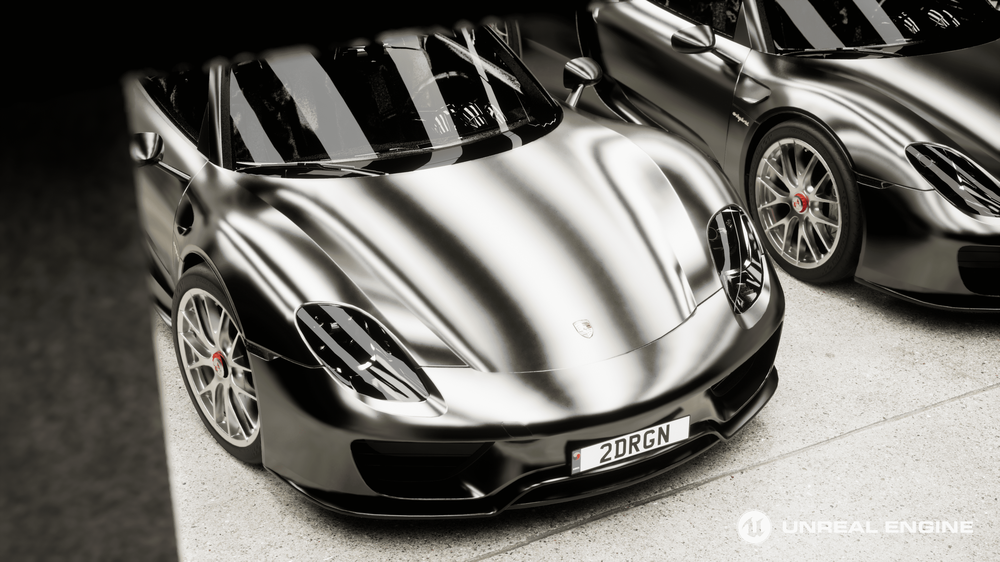

PORSCHE 718 SPYDER - CGI LIGHTING
UNREAL ENGINE5 / 4K / PERSONAL WORK 2023
Porsche 918 entirely rendered with Lumen and Ray Tracing in Unreal Engine 5.2
The purpose of this work was to practice Lighting and Material, so I downloaded Porsche 918 in SketchFab and modified the modeling.
- CREATOR. YONGJUN LEE
- TOOLS. UNREAL ENGINE5, SUBSTANCE 3D, AFTER EFFECTS